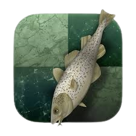

okay so for the nerds, here is how this works briefly. firstly, the website fetches the game using the users chess.com username or the user enters the PGN (portable game notation). The PGN is validated and then converted to a list of FENs (forsyth–edwards notation) that basically represent the curren position of the board, and then this is where Stockfish comes in.
 stockfish is an open-source chess engine. it analyses the current position and tells you the best move(s) and the game eval. Eval is a number based system used to describe who's better in the current position; ie "+1" means White is better by 1, "-1" means Black is better by 1 and so on. there is also stuff like "M6" or "M-6" which means checkmate can be forced by white and black respectively in 6 moves.
here is where my algorithm comes in, chessbro compares the change in eval to classify the moves as excellent/best/good/blunder etc. then we use a list of openings, to determine the game's opening. I use a LOT of libraries in this process that do some heavy-lifting for me, so a HUGE thank you to all open-source contributors/maintainers that work on those libs.